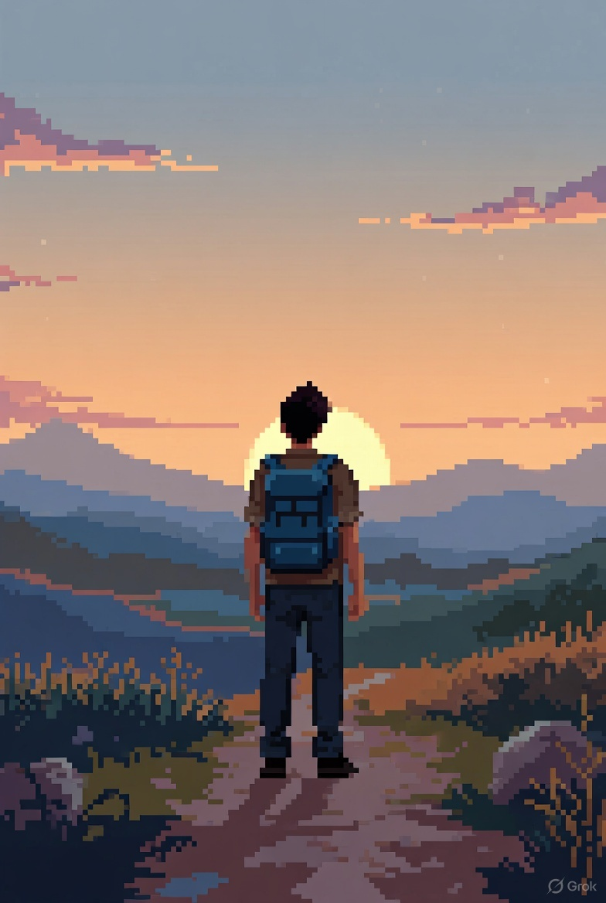

Фритрек и нулевой спринт: Подготовка к работе

</HTML>
Это было самое начало пути. На этом этапе важно было проникнуться основами и настроиться на учёбу. И, возможно, подумать, как новые знания могут повлиять на ваше будущее.
Когда твоя основная профессия - юрист, и ты решаешь поступить на курс "Фулстек-разработчик", первый шаг оказывается самым трудным.